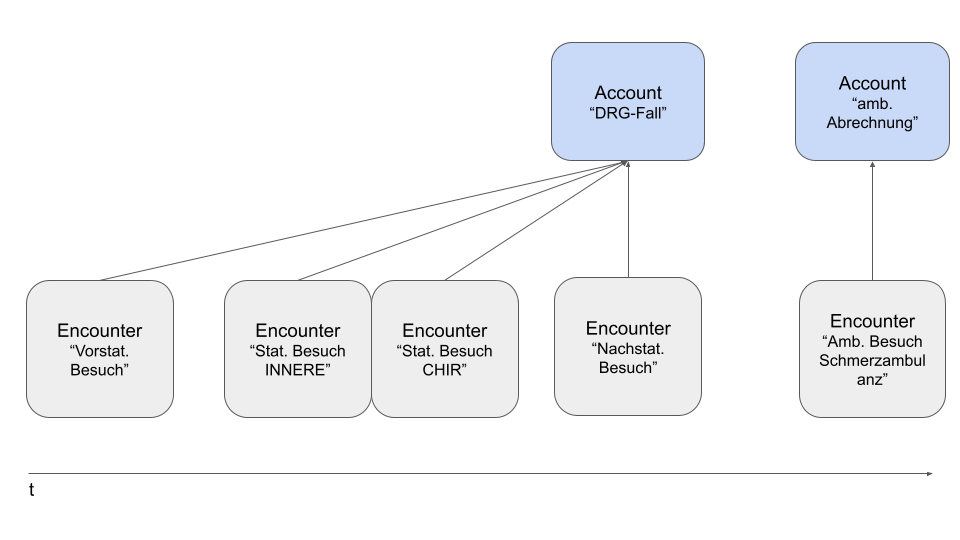
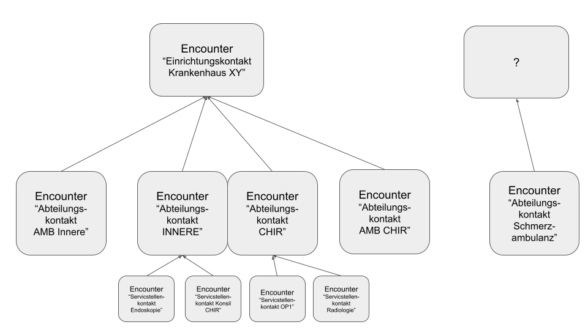
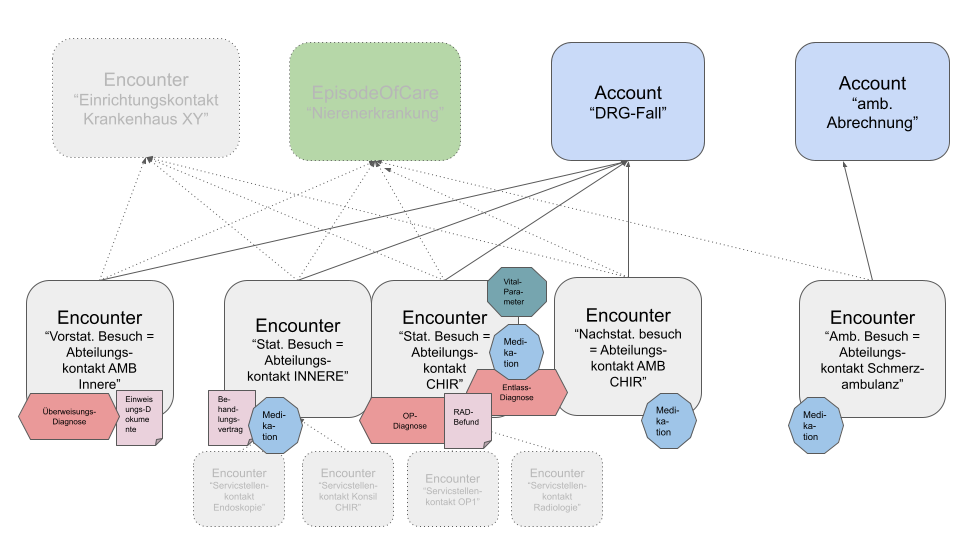

Seiteninhalt:
Der Begriff "Fall" gruppiert im Sprachgebrauch verschiedene Konzepte, die in FHIR durch unterschiedliche Ressourcen repräsentiert werden:
Aufenthalt/Besuch/Kontakt (Encounter): Der stationäre Aufenthalt oder der ambulante Kontakt eines Patienten in einer Gesundheitseinrichtung wird in FHIR durch die Ressource Encounter abgebildet.
Abrechnungsfall (Account): Der Fall, im Sinne einer Gruppierung von medizinischen Leistungen, die in einem gemeinsamen Kontext abgerechnet werden, sind in FHIR durch die Ressource Account repräsentiert. Ein Abrechnungsfall kann mehrere Encounter umfassen (z.B. vorstationärer Besuch, stationärer Aufenthalt und nachstationäre Besuche)

AbrechnungsfallAmbulant (Account): Diese Spezialisierung des ISiK Abrechnungsfall-Profils ist für die Abbildung von ambulanten Abrechnungsfällen im Krankenhaus vorgesehen. Auch dieser Abrechnungsfall kann mehrere Encounter umfassen, diese stellen in dem Fall aber punktuelle Besuche dar.
Medizinischer Fall (EpisodeOfCare): Der medizinische Fall gruppiert Informationen, die im Kontext einer gemeinsamen (Dauer-)Diagnose stehen und wird in FHIR durch die Ressource EpisodeOfCare dargestellt.

Wichtig ist die Herausstellung, dass "Besuch" und "Fall" wechselseitig keine synonymen Begriffe sind.
In dem von der Medizininformatik-Initiative zur Kontaktverfolgung (Infektionsketten) des Patienten entworfenen Modell wird der Encounter in drei verschiedenen Ebenen verwendet:
Einrichtungskontakt: Als Kontakt eines Patienten mit einer Einrichtung (z.B. Klinik) gruppiert mehrere Besuche bei einer Einrichtung als gemeinsamen Behandlungskontext.
Abteilungskontakt: Als Kontakt des Patienten mit einer Fachabteilung eines Krankenhauses (z.B. einer Ambulanz oder einer stationären Fachabteilung).
Versorgungsstellenkontakt: Als Kontakt des Patienten mit konkreten Servicestellen, wie z.B. Radiologie oder Endoskopie
Zur Unterscheidung der verschiedenen Kontaktebenen wird in der MI-I eine Kodierung in Encounter.type verwendet. Die Hierarchie der Encounter wird über die Encounter.partOf-Relation hergestellt. Ambulante Besuche werden in dem Modell derzeit noch nicht berücksichtigt.

Für die derzeitige Ausbaustufe des ISiK Basismoduls werden alle zuvor genannten Sichtweise und Modelle berücksichtigt:

Verpflichtend umzusetzen ist für die bestätigungsrelevanten Systeme der Account, im Sinne der Gruppierung einzelner Besuche, zu einem gemeinsamen (Abrechnungs-)Fall sowie der Encounter der Ebene "Abteilungskontakt" im Sinne des Modells der Medizininformatikinitiative.
Herstellern steht es frei, weitere Ressourcen, wie zum Beispiel die EpisodeOfCare oder den Encounter, im Sinne des Einrichtungskontaktes bzw. des Versorgungsstellenkontaktes, zu implementieren.
Wichtig sind dabei jedoch folgende Punkte zu beachten:
Encounter.type-Code, zu kennzeichnen.Encounter.partOf in ISiK nicht als "Must Support" markiert ist. Systeme können daher nicht verlässlich davon ausgehen, dass diese Beziehung zur Herstellung der Encounter-Hierarchie zwischen Einrichtungs- und Abteilungskontakt vorhanden ist.
Die "Fall"-Nummer ist ein im Kontext der stationären Versorgung häufig verwendetes Vehikel, um (insbesondere in der HL7-V2-Kommunikation) mit einfachen Mitteln den Fallkontext medizinischer Dokumentationen herzustellen.
In den meisten Fällen handelt es sich bei der "Fall"-Nummer um einen eindeutigen Identifier des Abrechnungsfalls.
Im ISiK-Kontext ist die Fallnummer daher als Identifier des Accounts zu sehen und nicht geeignet, einen Encounter eindeutig zu identifizieren und damit den für FHIR-Ressourcen erforderlichen Encounter-Kontext zu etablieren.
Es müssen zusätzliche Kriterien, wie z.B. Zeitraum(Encounter.period), Fallart (Encounter.class) oder Status (Encounter.status) berücksichtigt werden, um den korrekten Encounter zu finden.
ISiK berücksichtigt jedoch die gängige Praxis, dass die Fallnummer als primäres Suchkriterium verwendet wird; auch von Systemen, die rein der medizinischen Versorgung dienen und keine Abrechnungsfunktionen implementieren. Um insbesondere Subsysteme von der Pflicht zu entbinden, die Account-Ressource zu implementieren, nur um Zugriff zur Fallnummer zu bekommen, ist das Mitführen des Account-Identifiers als logische Referenz auf den Account im Encounter verpflichtend. Die Fallnummer eines Encounters kann daher auch ohne Kenntnis des Accounts ermittelt werden.

Neben der stationären Versorgung gibt es im Krankenhaus einen zunehmend wachsenden Teil an ambulanter Versorgung. Ob Chefarztambulanzen, Hochschulambulanzen oder ambulantes Operieren - diese Fälle kommen im Krankenhaus vor und sind teilweise auch in den Primär- und Subsystemen vorhanden. Deshalb wird ab ISiK Stufe 6 die Möglichkeit ergänzt, auch ambulante Fälle in den Fall-bezogenen Ressourcen abzubilden.
Zum einen wird ein neues Account-Profil "AbrechnungsfallAmbulant" eingeführt, welches vom ISiKAbrechnungsfall ableitet und diesen um die Möglichkeit erweitert, ambulante "Schein"-Nummern zu repräsentieren, einen Gültigkeitszeitraum anzugeben und Informationen über die durchführende Ambulanz zu hinterlegen.
Zum anderen wird der ISiKKontaktGesundheitseinrichtung so erweitert, dass jetzt auch ambulante Besuche als Kontaktarten abgebildet werden können.
Bei ambulanten Fällen spielen noch weitere Informationen eine Rolle, wie z.B. EBM-Ziffern. Da das ISiK-Basismodul allerdings kein Abrechnungsmodul ist, wurden diese Informationen bewusst nicht abgebildet. Für EBM-Ziffern verweisen wir auf die Profilierung eines ChargeItem in den deutschen Basisprofilen: ChargeItem für EBM-Ziffer als Abrechnungsposition.
Im ISiK-Modell sind klinische Ressourcen an Abteilungskontakte geknüpft. Die Abfrage von klinischen Daten erfolgt daher in der Regel in einem zwei-Schritt-Prozess:
Dieser Ansatz gewährleistet, dass klinische Daten eindeutig dem korrekten Abteilungskontakt zugeordnet werden können und berücksichtigt, dass ein Abrechnungsfall mehrere Abteilungskontakte umfassen kann.
Die Basis-Abfrage für alle zu einem Abrechnungsfall gehörenden Encounter erfolgt über den account:identifier Suchparameter:
GET BASE_URL/Encounter?account:identifier=http://example.org/fhir/sid/fallnummer|F-2024-123456
Diese Abfrage liefert alle Encounter, die mit dem Account verknüpft sind, der die angegebene Fallnummer trägt.
Je nach Anwendungsfall können zusätzliche Filter verwendet werden, um die Ergebnismenge einzuschränken:
Einschränkung auf Abteilungskontakte (empfohlen für Systeme, die zusätzliche Encounter-Typen implementieren):
GET BASE_URL/Encounter?account:identifier=http://example.org/fhir/sid/fallnummer|F-2024-123456
&type=http://fhir.de/CodeSystem/Kontaktebene|abteilungskontakt
Ausschluss vor- und nachstationärer Kontakte:
GET BASE_URL/Encounter?account:identifier=http://example.org/fhir/sid/fallnummer|F-2024-123456
&type=http://fhir.de/CodeSystem/kontaktart-de|normalstationaer
Oder für Intensivkontakte:
GET BASE_URL/Encounter?account:identifier=http://example.org/fhir/sid/fallnummer|F-2024-123456
&type=http://fhir.de/CodeSystem/kontaktart-de|intensivstationaer
Kombination mehrerer Kontaktarten:
GET BASE_URL/Encounter?account:identifier=http://example.org/fhir/sid/fallnummer|F-2024-123456
&type=http://fhir.de/CodeSystem/kontaktart-de|normalstationaer,http://fhir.de/CodeSystem/kontaktart-de|intensivstationaer
Einschränkung auf aktive Encounter:
GET BASE_URL/Encounter?account:identifier=http://example.org/fhir/sid/fallnummer|F-2024-123456
&status=in-progress
Zeitliche Einschränkung:
GET BASE_URL/Encounter?account:identifier=http://example.org/fhir/sid/fallnummer|F-2024-123456
&date=ge2024-01-01&date=le2024-12-31
Nach der Ermittlung der relevanten Encounter können alle klinischen Ressourcen über die Encounter-Referenzen abgerufen werden. Die Encounter-IDs aus Schritt 1 werden dabei als Suchparameter verwendet.
Angenommen, die Abfrage aus Schritt 1 hat folgende Encounter-IDs zurückgeliefert: Encounter/123, Encounter/456, Encounter/789
GET BASE_URL/Condition?encounter=Encounter/123,Encounter/456,Encounter/789
GET BASE_URL/Procedure?encounter=Encounter/123,Encounter/456,Encounter/789
GET BASE_URL/Observation?encounter=Encounter/123,Encounter/456,Encounter/789
GET BASE_URL/MedicationRequest?encounter=Encounter/123,Encounter/456,Encounter/789
Ein typischer Workflow für die Abfrage aller Diagnosen eines Abrechnungsfalls könnte wie folgt aussehen:
1. Ermittlung der Encounter:
GET BASE_URL/Encounter?account:identifier=http://krankenhaus-beispiel.de/fhir/sid/fallnummer|F-2024-123456
&type=http://fhir.de/CodeSystem/Kontaktebene|abteilungskontakt
Antwort (vereinfacht):
{
"resourceType": "Bundle",
"type": "searchset",
"entry": [
{
"resource": {
"resourceType": "Encounter",
"id": "enc-innere-medizin",
"class": { "code": "IMP" },
"type": [
{
"coding": [
{
"system": "http://fhir.de/CodeSystem/Kontaktebene",
"code": "abteilungskontakt"
}
]
}
],
"serviceType": {
"coding": [
{
"system": "http://fhir.de/CodeSystem/dkgev/Fachabteilungsschluessel",
"code": "0100",
"display": "Innere Medizin"
}
]
}
}
},
{
"resource": {
"resourceType": "Encounter",
"id": "enc-intensivmedizin",
"class": { "code": "IMP" },
"type": [
{
"coding": [
{
"system": "http://fhir.de/CodeSystem/Kontaktebene",
"code": "abteilungskontakt"
}
]
}
],
"serviceType": {
"coding": [
{
"system": "http://fhir.de/CodeSystem/dkgev/Fachabteilungsschluessel",
"code": "3600",
"display": "Intensivmedizin"
}
]
}
}
}
]
}
2. Abfrage der Diagnosen für alle ermittelten Encounter:
GET BASE_URL/Condition?encounter=Encounter/enc-innere-medizin,Encounter/enc-intensivmedizin
Dieser zwei-Schritt-Prozess stellt sicher, dass alle relevanten klinischen Daten eines Abrechnungsfalls korrekt ermittelt werden, auch wenn der Patient während des Aufenthalts mehrere Fachabteilungen durchlaufen hat.
account:identifier Suchparameter für Encounter unterstützen.Encounter.account.identifier als logische Referenz verpflichtend mitzuführen, auch wenn die Account-Ressource selbst vom anfragenden System nicht implementiert wird.account:identifier unterstützen werden. Der :identifier-Modifier ist wiederum nicht für Chaining unterstützt.